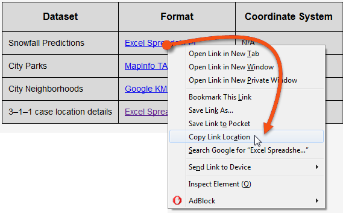
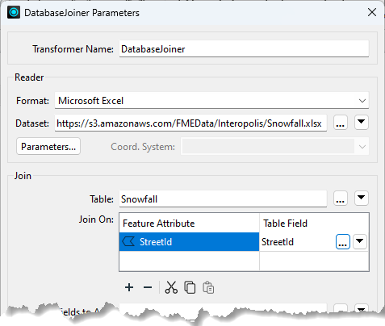
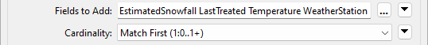
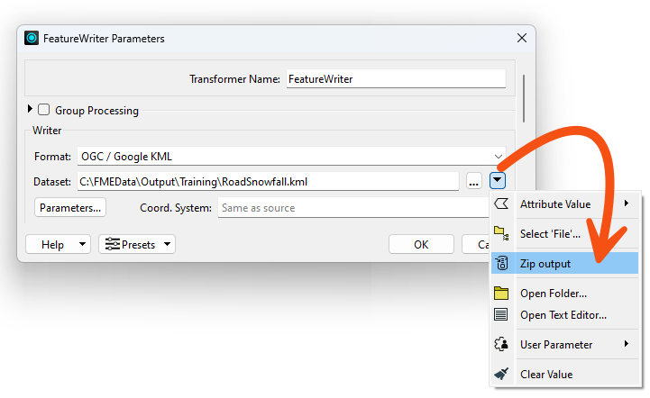
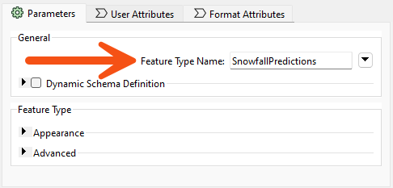
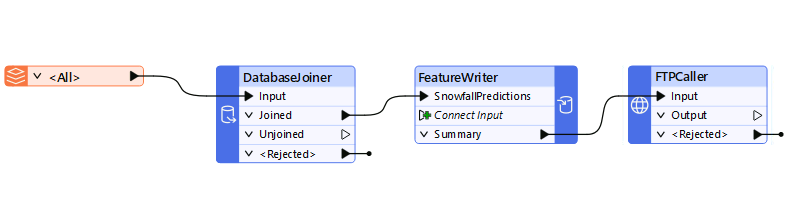
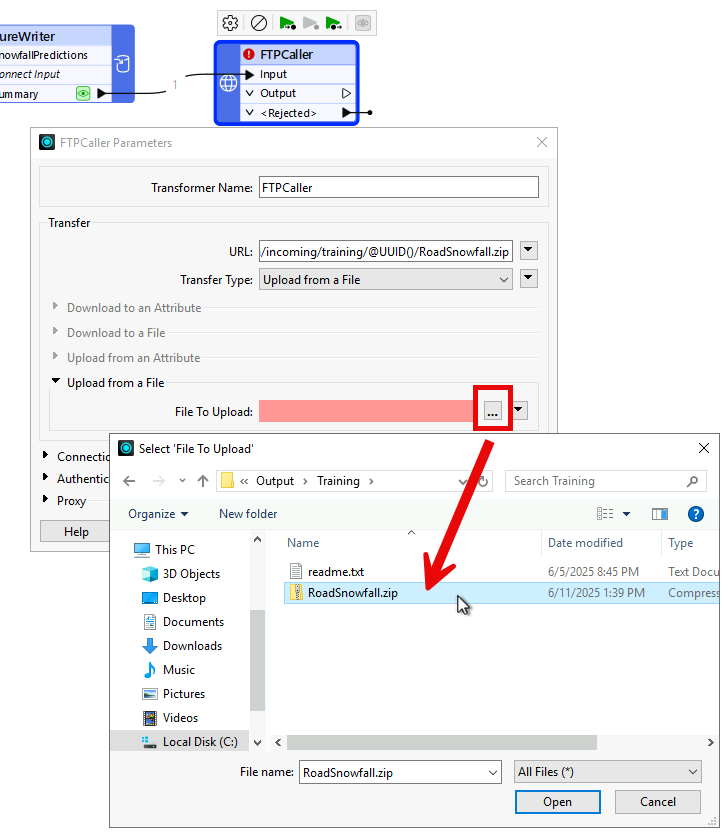
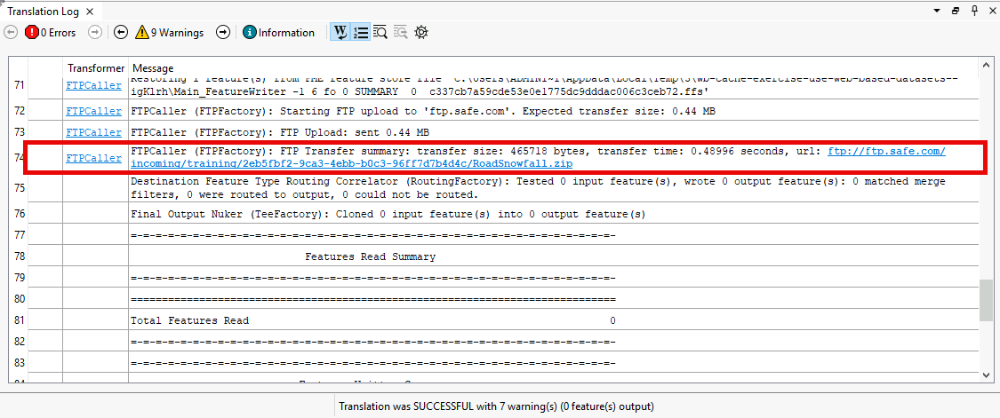

Learning Objectives
After completing this lesson, you’ll be able to:
- Carry out a data join with a web-based dataset.
- Write data to a compressed output using the FeatureWriter transformer.
- Upload data to an FTP site (or another online service) using a workspace.
Instructions
- Scroll down to read the text below.
- Complete the exercise by following the steps.
- Complete the Quiz toward the bottom of the page.
- Optional: Let us know if you found this lesson relevant to your role by filling out the survey at the bottom of the page.
- Click 'Next' to mark the lesson complete.
Resources
Exercise
In this exercise, we're joining snowfall data to a set of road records and writing the results to an FTP site for other users to access. We'll create a workspace that joins local data to an online dataset, processes the data, and writes it to a different web destination.
1) Add Reader
- Start FME Workbench (2026.1 or later)
- Click New to create a blank workspace.
- Add a reader with these parameters:
| Reader Format |
Autodesk AutoCAD DWG/DXF |
| Reader Dataset |
https://s3.amazonaws.com/FMEData/FMEData/Data/Transportation/CompleteRoads.dwg
or
C:\FMEData\Data\Transportation\CompleteRoads.dwg
|
| Parameters |
Group Entities By: Attribute Schema |
| Parameters |
Coordinate System: UTM84-10N |
| Workflow Options |
Single Merged Feature Type |
The Group Entities parameter is an AutoCAD-specific option. It ensures that the attributes from the AutoCAD source data are exposed in Workbench.
The Merged Feature Type option treats all the road data as a single map layer, which is fine because we don't want to handle multiple layers separately.

We are just reading a file from a URL here. If you can access a cloud data storage provider such as Google Drive or Dropbox, try copying CompleteRoads.dwg to a folder on that service. Then, use the Select File From Web functionality to authenticate, connect, and read the data.
2) Locate Snowfall Dataset

- Back in FME Workbench, add a DatabaseJoiner transformer and connect it to the <All> roads feature type.
- Open the DatabaseJoiner parameters.
- Set the parameters as follows, pasting the URL you copied from the web browser.
| Reader Format |
Microsoft Excel |
| Reader Dataset |
https://s3.amazonaws.com/FMEData/Interopolis/Snowfall.xlsx |
- Click the Parameters button and check that the data is being read correctly.
- The Preview table should show records with the correct columns (
StreetId, EstimatedSnowfall, etc.).
- Back in the main DatabaseJoiner dialog, select Snowfall as the Table and select
StreetId as both the Feature Attribute and Table Field to be joined.
- If no attributes are available under the Feature Attribute field, you failed to use the Group Entities By: Attribute Schema parameter when adding the AutoCAD reader. To resolve this, the simplest method is to delete and re-add the reader, using the correct options this time.

- The final parameters to set in the DatabaseJoiner are Fields to Add and Cardinality:

- Select the following Fields to Add:
- EstimatedSnowfall
- LastTreated
- Temperature
- WeatherStation
- Ensure Cardinality is set to Match First (1:0...1+).
- Each road record will be joined to the first matching database record FME finds. This option is least likely to lead to error messages in the log.
Now, it's time to write the data. Writing data directly to a web service is more complex, so we'll create a zipped, file-based dataset and then upload it to a web service.
- Add a FeatureWriter transformer and connect it to the DatabaseJoiner transformer's Joined port.
- Open the FeatureWriter parameters and set the writer up as follows.
| Writer Format |
OGC / Google KML |
| Writer Dataset |
C:\FMEData\Output\Training\RoadSnowfall.kml |
- Then click on the dropdown arrow to the right of the Dataset parameter, and choose the option to Zip Output.
- This configuration instructs the transformer to write data directly to a zipped (compressed/archived) file. You can manually type in a path, including .zip if you prefer.

- As a final step in this transformer, rename the output Feature Type Name to SnowfallPredictions:

- Click OK.
- Run the workspace.
- The FeatureWriter writes the data.
- Inspect the FeatureWriter's Summary port cache.
- Inspect the attribute called
_dataset.
- This attribute records the dataset's name and path.
- The next step is to upload this file to a web service.
- You can then use this path to upload the data to any web service you can access; you'll need to use the appropriate Connector transformer. For example, use the GoogleDriveConnector or DropboxConnector.
- To avoid having to authenticate, we'll show an example using the FTPCaller.
5) Add FTPCaller Transformer
- Add an FTPCaller transformer and connect it to the FeatureWriter's Summary output port. The workspace should now look like this:

- Open the FTPCaller parameters.
- For the URL, click on the down-arrow and select Open Text Editor....
- An overview of the FTPCaller parameters can be found here.
- Set the URL to the following.
- The purpose of the @UUID() is to ensure that you are writing to a unique location each time the workspace is run. This is necessary because the FTP server does not allow overwriting.
ftp://ftp.safe.com/incoming/training/@UUID()RoadSnowfall.zip
- Next, set the Transfer Type to Upload from a File.
- Under Upload from a File > File to Upload, select the RoadSnowfall.zip file from C:\FMEData\Output\Training\.

6) Run Translation
- Save the workspace and then run it.
- In the Translation Log, look for the entry for the FTPCaller.

- You should see that the FTPCaller uploaded 0.44 MB to the FTP server, and the URL is logged.
Congratulations! You have successfully read and written data using web data connectors.
Optional Challenge: KML Styling
The project aims to write the data to KML format. As a training exercise, we're only interested in how and where we write the data. However, a realistic requirement would be to set the color and style of the spatial data being written (in spatial terms, we sometimes call this symbology). Try adding a KMLStyler and setting features' Color using conditional values. For example, make streets with 0 EstimatedSnowfall green, between 0 and 150 yellow, and over 150 red.
Challenge Answer: Open after attempting the challenge.
- You can view the workspace with a KMLStyler configured here: completed workspace (C:\FMEData\Workspaces\AdvancedReadingAndWriting\use-web-based-datasets-advanced-complete.fmw).
Optional Challenge: Dynamic File Handling in FTPCaller
Intead of hardcoding the dataset name into the FTPCaller's URL parameter (the RoadSnowfall.zip part), configure the FTPCaller to dynamically handle the URL based on the value of _dataset from the FeatureWriter.
Additionally, try doing something similar for the File to Upload parameter.
Challenge Answer: Open after attempting the challenge.
- View the completed workspace (C:\FMEData\Workspaces\AdvancedReadingAndWriting\use-web-based-datasets-advanced-complete.fmw).
- You have two options here:
- Use the Text Editor to extract strings and construct what you need.
- Use a transformer.
- Generally, we recommend using a transformer when you can. They usually are designed to catch edge cases better than you might do in a series of expressions.
- Add a FilenamePartExtractor between the FeatureWriter and the FTPCaller.
- Open its parameters and set Source Filename to
_dataset.
- Click OK.
- Open the FTPCaller parameters and set:
- URL to
ftp://ftp.safe.com/incoming/training/@UUID()@Value(_dirname)
- File To Upload to
_dirpath
- Click OK.
- Run the workspace.
- You should see the file was uploaded properly.
- The advantage of this system is we could change the name of the output data or run it on a different operating system, and it would still work.